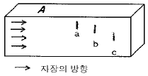
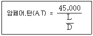
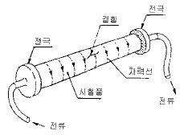
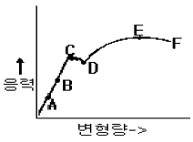
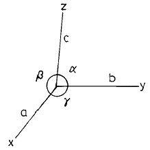
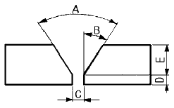

자기비파괴검사산업기사(구) (2002-05-26 기출문제)
1과목: 자기탐상시험원리
1. 강제석유 저장탱크의 용접부를 자분탐상검사할 때 자화장치의 배치가 옳게 설명된 것은?
- 용접선에 거의 직각방향의 자장이 얻어지도록 배치한다.
- 용접선에 거의 평행방향의 자장이 얻어지도록 배치한다.
- 용접선에 거의 직각 및 평행방향의 자장이 얻어지도록 2가지를 병행한다.
- 용접선에 빗각의 자장이 얻어지도록 배치한다.
(정답률: 알수없음)

2. 자장과 관련된 특성 설명중 틀리게 된 것은?
- 각 자극간에 폐회로를 형성한다.
- 자력선은 강자성체내에만 존재한다.
- 자극간의 거리가 멀어지면 자속밀도는 감소한다.
- 자속은 자기적 저항이 작은 경로로 흐른다.
(정답률: 알수없음)
3. 다음 중 자분탐상검사의 단점이 아닌 것은?
- 강자성체에만 적용이 가능하다.
- 탈자가 필요한 경우가 있다.
- 내부결함은 전혀 검출되지 않는다.
- 자분의 잔류물에 대한 후처리가 요구되기도 한다.
(정답률: 알수없음)
4. 비투자율 400인 강자성체를 환상 솔레노이드내에 넣었을 때 평균 자계의 세기가 300A/m 라면 강자성체 중의 자속밀도는? (단, μ0 = 4π×10-7[H/m])
- 0.15Wb/m2
- 0.30Wb/m2
- 0.45Wb/m2
- 0.55Wb/m2
(정답률: 알수없음)
5. 직류 극간식 연속법으로 검사한 결과 나타난 결함 지시가 표면상 결함인지 표면직하 결함인지 알고자 할 때에는 어떻게 하는 것이 좋은가?
- 표면을 재처리후 육안 관찰
- 탈자후 잔류법으로 재검사
- 탈자후 교류로 재검사
- 형광 자분을 적용후 재시험
(정답률: 알수없음)
6. 불연속부에 형성된 자분은 불연속부의 방향이 다음 중 어떤 경우에 있을 때 가장 잘 나타나는가?
- 자력선의 방향에 180°
- 자력선의 방향에 45°
- 자력선의 방향에 90°
- 자화전류의 방향에 90°
(정답률: 알수없음)
7. 자분탐상검사후의 탈자방법으로 틀린 것은?
- 자계의 강도를 점차적으로 감소시킨다.
- 자화전류를 점차적으로 증가시킨다.
- 코일로부터 제품을 멀리한다.
- 제품을 코일로부터 멀리한다.
(정답률: 알수없음)
8. 습식자분과 비교하여 건식자분을 사용할 때의 설명으로 틀린 것은?
- 복잡한 형상의 모든 표면을 검사하기가 어렵다.
- 자동검사를 하는데 어려움이 있다.
- 작은 부품의 대량검사시 습식자분보다 검사속도가 빠르다.
- 매우 선명하고 얕은 결함을 검출할 때 습식자분보다 감도가 낮다.
(정답률: 알수없음)
9. 다음 중 자분탐상검사용 부속기기가 아닌 것은?
- 침전계(Centrifuge Tube)
- 스프레이 건(Spray Gun)
- 자장계(Field Indicator)
- 충전기(Charger)
(정답률: 알수없음)
10. 실린더 형태의 강재 시험체내에 구리로 된 전도체를 집어 넣은 다음 구리전도체에 전류를 통전시키면 실린더 시험체내에는 어떤 자화가 생성되겠는가?
- 전도체와 같은 강도와 모양의 자력선이 생긴다.
- 전도체에 형성된 자장보다 더 크다.
- 전도체에 형성된 자장보다 작다.
- 실린더의 외경에 관계없이 동일하다.
(정답률: 알수없음)
11. 코일법으로 자화하는 경우 코일 내의 시험체의 자속밀도에 직접적인 영향을 주지 않는 요인은?
- 코일을 감은 수
- 코일에 흐르는 전류 값
- 시험체의 투자율
- 코일의 길이
(정답률: 알수없음)
12. 다음 자분의 성질중 결함부로의 분산성과 흡착성에 관계 없는 것은?
- 자기적 성질
- 자분의 입도
- 자분의 비중
- 자분의 색조
(정답률: 알수없음)
13. 다음 중 자분탐상검사를 수행하는데 가장 쉽게 검출 가능한 결함의 방향은?
- 코일법에 있어서 코일의 축과 평행한 결함
- 극간법에 있어서 극과 극을 잇는 가상선에 평행한 결함
- 프로드법에 있어서 전극을 잇는 가상선에 평행한 결함
- 축통전법에 있어서 축에 수직한 결함
(정답률: 알수없음)
14. 전류관통법과 코일법의 공통점은 무엇인가?
- 자계의 방향
- 전극의 비접촉
- 스파크 발생
- 탈자의 형식
(정답률: 알수없음)
15. 자분탐상기의 정기점검 사항으로 필수 조건이 아닌 것은?
- 입력측과 접지 사이의 절연 저항 측정
- 전기회로의 기능 점검
- 자화 장치나 탈자 장치의 타이머 정밀도 점검
- 장치의 외부 표면 점검과 변색 점검
(정답률: 알수없음)
16. 두께가 2in인 시험체를 프로드법으로 검사할 때 간격이 7in이라면 자화전류치는 얼마이면 되겠는가?
- 320 ∼ 460Amp
- 630 ∼ 770Amp
- 870 ∼ 1010Amp
- 1000 ∼ 11400Amp
(정답률: 알수없음)
17. 자분탐상검사시 자분의 적용방법을 잘 설명하고 있는 것은?
- 잔류법은 투자성이 강한 재료에 적용하는 것이 원칙이다.
- 건식법에서 공기압이 높으면 시험체의 표면에 습기가 있어도 무방하다.
- 잔류법에서는 검사품들이 서로 마찰되지 않도록 주의하여야 한다.
- 습식법의 용매를 물로 사용할 경우 자분은 다른 촉매 없이 현탁하면 된다.
(정답률: 알수없음)
18. 오래된 비파괴검사법의 하나로서 기름과 백색법(oil and white method)으로 지칭되는 이 시험 방법은?
- 자분탐상시험
- 와전류탐상시험
- 침투탐상시험
- 초음파탐상시험
(정답률: 알수없음)
19. 자분탐상검사에서 자계내에 존재하는 자력선의 성질 설명으로 틀린 것은?
- 자력선은 N극에서 나와 S극에서 그친다.
- 같은 방향으로 향하는 자력선은 서로 반발한다.
- 자극 주위에 자력선 밀도가 높다.
- 자력선은 서로 교차한다.
(정답률: 알수없음)
20. 다음 중 시험체 외부의 도체에 통전하여 시험체를 자화시키는 검사법은?
- 전류관통법, 코일법
- 축통전법, 직각통전법
- 극간법, 프로드법
- 자속관통법, 축통전법
(정답률: 알수없음)
2과목: 자기탐상검사
21. 취화(Embrittlement)현상은 재료의 사용중에 어떤 성질이 감소되는 것을 말하는가?
- 인장강도
- 연성
- 항복강도
- 피로강도
(정답률: 알수없음)
22. 다음 중 용접부의 표면 및 표면하에 발생될 수 있는 불연속은 어떤 것인가?
- 언더컷(Undercut)
- 피로균열(Fatigue crack)
- 기공(Porosity)
- 응력균열(Stress crack)
(정답률: 알수없음)
23. 습식자분의 검사 방법으로 틀린 내용은?
- 거치식 장치에서는 매일 검사시작 전에 농도를 측정한다.
- 검사절차서에 표기된 시험편으로 점검한다.
- 자분의 농도를 측정하려면 자분액을 가열하여 증발시킨 후 잔류량을 계량한다.
- 물을 자분액으로 사용할 시에는 분산제를 필히 첨가한다.
(정답률: 알수없음)
24. 자분탐상시험의 거치식 장비에는 일반적으로 변환 스위치(Transfer Switch)가 있다. 이의 기능은?
- 교류를 반파직류로 변화시킴
- 코일 또는 축통전법으로의 선택
- 자화 또는 탈자방식의 선택
- 건식자분 또는 습식자분의 적용 선택
(정답률: 알수없음)
25. 자분탐상시험의 후처리 방법으로 적당하지 않은 것은
- 탈자종료 후는 탈자의 정도를 확인한다.
- 시험품에는 필요에 따라 방청처리를 해 둔다.
- 습식자분의 경우는 걸레로 잘 닦아낸 후 용제 등을 사용하여 제거한다.
- 시험품에 직접 전류를 흘려 자화한 경우 아크 발생부에 도장(칠)을 해 둔다.
(정답률: 알수없음)
26. 다음 중 자분 검사액의 구성 성분이 될 수 없는 것은?
- 물
- 경유
- 형광물질
- 습식자분
(정답률: 알수없음)
27. 원형자화 통전법으로 용접 구조물을 잔류법으로 탐상하려고 한다. 알맞은 조건은?
- 낮은 투자율, 높은 보자성
- 낮은 보자성, 높은 투자율
- 낮은 투자율, 낮은 보자성
- 높은 투자율, 높은 보자성
(정답률: 알수없음)
28. 압연제품에 생길 수 있는 불연속은 무엇인가?
- 겹침(Lap)
- 라미네이션(Lamination)
- 터짐(Burst)
- 수축공(Shrinkage)
(정답률: 알수없음)
29. 자분탐상검사 방법 중에서 극간법과 프로드법을 설명한 것이다. 틀린 것은?
- 극간법은 검사품의 표면에 스파크(spark) 등의 손상을 주지 않는다.
- 극간법은 자기회로를 강자성체에 폐회로로 적용시킬수 있어서 반자장이 매우 작다.
- 프로드법은 원형자장을 형성하므로 2개의 전극을 잇는 선에 수직으로 놓여진 결함이 가장 잘 나타난다.
- 프로드법은 검사품에 직접 전류를 적용하므로 전극을 잘 접촉시켜야 한다.
(정답률: 알수없음)
30. 다음 중 결함의 형상과 자분의 부착상태의 설명이 틀리게 된 것은?
- 깊이가 얕은 균열에서는 부착된 자분이 떨어지기 쉽다.
- 폭이 아주 넓은 표면균열은 자분모양을 형성하지 못할 수도 있다.
- 깊이가 깊은 표면균열에는 자분의 부착이 쉬우므로 자분모양이 쉽게 형성된다.
- 길이가 긴 균열일수록 부착하는 자분의 높이가 높다.
(정답률: 알수없음)
31. 자분탐상시험시 검출하기 쉬운 결함에 대한 설명이다. 올바른 것은?
- 극간법에서 자극간 중앙에 위치하고 자극 중심을 잇는 직선에 평행한 방향의 균열
- 극간법에서 자극간 중앙에 위치하고 자극 중심을 잇는 직선과 45° 의 기울기를 갖는 균열
- 극간법에서 자극간 중앙에 위치하고 자극 중심을 잇는 직선과 수직방향의 균열
- 축통전법에서 환봉강의 원주방향의 균열
(정답률: 알수없음)
32. 보수검사시 코일법을 이용한 단강 부품의 자분탐상에 대한 설명으로 틀린 것은?
- 미세한 결함을 검출해야 하므로 입자가 작은 자분에 의한 습식법이 사용된다.
- 형광자분의 적용시 비형광자분에 비해 모서리부에 의사 모양이 나타나기 쉽다.
- 자분탐상시험 종료후 다시 조립하여 사용하므로 대부분의 경우 탈자가 필요하다.
- 대형 시험체의 경우에는 표층부의 검출능을 증대시킬 목적으로 교류나 맥류를 사용하는 것도 유효하다.
(정답률: 알수없음)
33. 축통전법과 코일법으로 자분탐상시험후 탈자를 행할 때 다음 중 어떤 순서로 해야 효과적인가?
- 코일법 → 축통전법 → 탈자
- 축통전법 → 탈자 → 코일법 → 탈자
- 코일법 → 탈자 → 축통전법 → 탈자
- 축통전법 → 코일법 → 탈자
(정답률: 알수없음)
34. 원통형 시험체 표면의 유효 자장강도를 시험체 치수와 자화전류치로 부터 쉽게 계산할 수 있는 자화방법을 나타낸 것은?
- 직각통전법
- 프로드법
- 축통전법
- 극간법
(정답률: 알수없음)
35. 그림에 표시한 같은 크기의 결함중에서 A면에 누설자속이 가장 강하게 나타나는 결함은?

- a
- b
- c
- 어느 곳이나 동일하다
(정답률: 알수없음)
36. 자분탐상시험시 나타난 지시로서, 자장의 누설에 의해 형성된 지시가 아닌 것을 무엇이라고 하는가?
- 자기펜 흔적(Magnetic Writing)
- 거짓 지시(False Indication)
- 관련지시(Relevant lndication)
- 재질 경계지시(Material Junction Indication)
(정답률: 알수없음)
37. 자분탐상시험을 적용함에 있어서 보수검사에 대한 설명 중 틀린 것은?
- 제조시의 결함종류와 동일하다.
- 통상 1년 또는 2년 등으로 주기적 검사를 한다.
- 소구경 관 내면의 검사 등에 대해서는 초음파탐상시험이 자기탐상시험의 대체 시험으로서 사용된다.
- 접근 가능한 대구경 관이면 내표면의 검사를 자분탐상시험으로 행한다.
(정답률: 알수없음)
38. 기포, 콜드 셧(Cold shut), 열간 터짐(Hot tear), 비금속 개재물과 같은 결함은 어떤 제품에서 발견되는가?
- 단조품
- 주조품
- 용접품
- 열처리 제품
(정답률: 알수없음)
39. 다음 중 형광자분탐상시 사용을 금해야 하는 자외선의 파장은?
- 300nm
- 330nm
- 360nm
- 380nm
(정답률: 알수없음)
40. 열처리해야 할 용접부의 자분탐상시 합격여부를 결정짓는 적절한 시기는?
- 처음 예열후 즉시
- 용접후 최소한 2일 경과후
- 용접후 최소한 3일 경과후
- 최종 열처리 후
(정답률: 알수없음)
3과목: 자기탐상관련규격및컴퓨터활용
41. 다음과 같은 식을 사용하는 자화방법은?

- 원형자화
- 선형자화
- 평행자화
- 벡터(Vector)자화
(정답률: 알수없음)
42. 다음 중 인터넷 검색엔진의 종류가 아닌 것은?
- Yahoo
- Galaxy
- 심마니
- MIME
(정답률: 알수없음)
43. ASME 규격에 의해 프로드법을 사용하여 검사할 경우 프로드 간격 6인치에 650[A]를 사용하였다. 만약 같은 장비로 프로드 간격을 12인치로 늘리고 전류를 1300[A]로 하였을 때 그 결과는 어떻게 되는가?
- 두가지 방법에서 동일한 결과를 얻는다.
- 6 인치 650[A]의 경우가 자분지시가 선명하다.
- 12 인치 1300[A]의 경우가 자분지시가 선명하다.
- 두가지 방법 모두 자분지시가 나타나지 않는다.
(정답률: 알수없음)
44. ASME Sec.V에서 프로드(prod)법은 시험편 두께가 3/4인치 이상일 경우 전류는 인치당 몇 암페어로 규정하는가?
- 70∼90Amp/인치
- 90∼100Amp/인치
- 100∼125Amp/인치
- 150∼170Amp/인치
(정답률: 알수없음)
45. KS D 0213에 의한 자분탐상시험에서 탐상결과 얻은 자분모양을 모양 및 집중성에 따라 분류한 것이 아닌 것은?
- 균열
- 독립
- 연속
- 군집
(정답률: 알수없음)
46. KS D 0213에서 시험 기록시 작성하지 않아도 되는 것은?
- 자분의 모양
- 시험 장치
- 자분의 적용시기
- 시험실 온도
(정답률: 알수없음)
47. KS 규격에서 자분탐상시험의 분류 방법에 해당되지 않는 것은?
- 자분의 종류
- 검사체의 두께
- 자분의 분산매
- 자화전류의 종류
(정답률: 알수없음)
48. KS D 0213에 의거 자외선조사 장치의 필터가 통과시켜야 할 근 자외선의 파장범위는?
- 160∼240nm
- 240∼320nm
- 320∼400nm
- 400∼480nm
(정답률: 알수없음)
49. KS D 0213에 의한 자화시 고려하여야 할 사항으로 내용이 틀린 것은?
- 자계의 방향을 예측되는 결함의 방향에 대하여 가급적 직각이 되게 한다.
- 자계의 방향을 시험면에 가급적 평행으로 되게 한다.
- 시험면을 태우는 것은 자화방법과는 관계없다.
- 반 자계를 적게 한다.
(정답률: 알수없음)
50. 표면흠의 검출에 사용되는 자화전류로 다음중 맞는 것은?
- 교류, 충격전류
- 직류, 충격전류
- 맥류, 교류
- 직류, 교류
(정답률: 알수없음)
51. ASCII 코드에 관한 설명 중 옳지 않은 것은?
- 대문자와 소문자를 구별한다.
- 256개의 문자표현이 가능하다.
- 영문자 하나를 7비트로 표현한다.
- 1비트의 패리티 비트를 갖고 있다.
(정답률: 알수없음)
52. KS D 0213의 A형 표준시험편에 A2-7/50의 표시가 있을 때 다음 중 틀린 설명은?
- 판의 두께는 50μm 이다.
- 인공 흠의 모양이 원형이다.
- 인공 흠의 깊이가 7μm 이다.
- 인공 흠의 모양이 직선형이다.
(정답률: 알수없음)
53. 컴퓨터가 처리할 내용을 지시하는 명령어의 집합을 무엇이라 하는가?
- 보조기억장치
- 중앙처리장치
- 시스템 분석
- 프로그램
(정답률: 알수없음)
54. 컴퓨터에 있어서 TCP와 UDP 등의 패킷 전달 서비스를 제공하며 경로 설정을 담당하는 것은?
- ARP
- SMTP
- FTP
- IP
(정답률: 알수없음)
55. ASME Sec.Ⅴ에서 자분의 분산농도 측정시 농도검사시 원심형 침전관에 얼마정도의 현탁액을 넣어야 하는가?
- 50㎖
- 100㎖
- 150㎖
- 200㎖
(정답률: 알수없음)
56. ASME Sec.Ⅷ App.6에 불합격 결함 수리시의 관련 규정을 잘못 설명한 것은?
- 불합격 결함을 제거하든지 합격 기준치이내 크기로 수리하여야 한다.
- 불합격 결함 제거후 재용접이 이루어져야 한다.
- 결함제거후 결함제거 확인 검사를 하여야 한다.
- 재용접후에는 다시 검사를 수행하여야 한다.
(정답률: 알수없음)
57. ASTM E 709에서 규정한 링시편(ring specimen)에서의 표면하 구멍의 갯수는?
- 9
- 10
- 11
- 12
(정답률: 알수없음)
58. ASME 규격에서 길이가 15인치, 직경이 3인치인 시험체를 코일법으로 검사할 때 자화전류 범위는? (단, 코일은 5회 감겨 있다.)
- 400 ~ 600 암페어
- 700 ~ 900 암페어
- 900 ~ 1100 암페어
- 1400 ~ 1600 암페어
(정답률: 알수없음)
59. 직접 접촉법, 축통전법을 사용하여 시험체를 자화하는 경우 ASME Sec.V의 요구사항에 따랐을 때 직경 2인치, 길이 6인치의 시험체를 자화하는데 소요되는 전류 값으로 가장 적당한 것은?
- 35,000 A.T
- 1,000 A
- 45,000 A.T
- 3,000 A
(정답률: 알수없음)
60. KS 규격에 의거한 그림의 검사법은?

- 축통전법
- 직각통전법
- 프로드법
- 전류관통법
(정답률: 알수없음)
4과목: 금속재료 및 용접일반
61. 응력-변형선도에서 최대하중점을 표시한 것은?

- B
- C
- D
- E
(정답률: 알수없음)
62. 서멧(cermet)의 특징이 아닌 것은?
- 고속절삭에 적당하다.
- 절삭속도의 광범위한 변화에 적당하다.
- 고온경도가 높고 내마모성, 내식성 등이 우수하다.
- 강 및 주철 절삭에 부적당하고 브레이징(Brazing)이 불가능하다.
(정답률: 알수없음)
63. X선으로 반사법을 이용하여 금속의 결정구조를 측정할 때 결정면의 면간 거리를 나타내는 식은? (단, d : 면간거리, n : 정정수(正整數), λ : 파장)
- d = nλ/2sinθ
- d = 2sinθ/nλ
- d = nλsinθ
- d = λsinθ
(정답률: 알수없음)
64. 용착된 금속의 급랭을 방지하는 목적이 아닌 것은?
- 용착금속 중에 가스나 슬래그가 떠오를 수 있는 시간을 주기 위함
- 모재와 용착금속이 자유로이 팽창, 수축하도록 하기 위함
- 담금질 경화를 방지하기 위함
- 슬래그제거를 쉽게하기 위함
(정답률: 알수없음)
65. 용접 금속에 흡수된 수소가스의 악영향은?
- 선상조직(線狀組織)
- 시효경화(時效硬化)
- 청열취성(靑熱脆性)
- 적열취성(赤熱脆性)
(정답률: 알수없음)
66. 다음 용접법 중 정전압 특성을 이용한 용접봉 송급방식이 아닌 것은?
- CO2 용접
- MIG 용접
- TIG 용접
- 서브머지드 용접
(정답률: 알수없음)
67. 그림에서 각축의 단위 길이를 a,b,c라 하고 그 사이의 각도를 α ,β ,γ라 했을 때 정방정계는?

- a=b=c, α=β=γ=90°
- a=b≠c, α=β=γ=90°
- a≠b≠c, α=β=γ≠90°
- a=b=c, α=β=90°, γ=120°
(정답률: 알수없음)
68. 점용접(spot welding)시 전극소재(Electrode materials)의 요구되는 성질이 아닌 것은?
- 피 용접재와 합금이 잘 될 것
- 전기 전도도가 높을 것
- 고온에서 경도가 높을 것
- 열 전도도가 높을 것
(정답률: 알수없음)
69. Ni-Cr계 합금의 특징 중 틀린 것은?
- 전기 저항이 대단히 작다.
- 내식성이 크고 산화도가 적다.
- Fe 및 Cu에 대한 열전 효과가 크다.
- 내열성이 크고 고온에서 경도및 강도의 저하가 적다.
(정답률: 알수없음)
70. 소결전기 접점 재료의 구비조건 중 틀린 것은?
- 접촉저항 및 고유저항이 커야한다.
- 비열 및 열전도율이 높아야 한다.
- 융착 현상이 적어야 한다.
- 열 및 충격에 잘 견디어야 한다.
(정답률: 알수없음)
71. 황금색으로 모양이 곱고 연성이 커서 장식용에 많이 쓰이는 것으로서 아연이 5∼20% 포함된 구리합금은?
- 포금
- 문쯔메탈
- 톰백
- 델타메탈
(정답률: 알수없음)
72. 접합하려고 하는 한쪽의 부재에 둥근 구멍을 뚫고 그곳에 용접하여 이음 하는 용접은?
- 플레어용접
- 비드용접
- 플러그용접
- 슬롯용접
(정답률: 알수없음)
73. 순수한 카바이트 1㎏ 에서는 이론적으로 약 몇ℓ 의 아세틸렌을 발생하는가?
- 280ℓ
- 290ℓ
- 326ℓ
- 348ℓ
(정답률: 알수없음)
74. 다음 그림과 같은 용접 홈(Groove) A, B, C부 명칭으로 모두 올바른 것은?

- A : 베벨 각도, B : 홈 각도, C : 루트 간격
- A : 개선 각, B : 베벨 각도, C : 루트 면
- A : 홈 각도, B : 베벨 각도, C : 루트 면
- A : 홈 각도, B : 베벨 각도, C : 루트 간격
(정답률: 알수없음)
75. 주철에 나타나는 스테다이트(steadite)조직의 3원 공정물이 아닌 것은?
- MnS
- Fe
- Fe3P
- Fe3C
(정답률: 알수없음)
76. 피복 금속아크 용접시 다음의 용접 전원 중에서 용입이 가장 깊은 것은?
- AC
- ACHF
- DCSP
- DCRP
(정답률: 알수없음)
77. 단위포의 모서리 길이의 단위인 1Å과 같은 것은?
- 10-8㎝
- 10-8㎜
- 10-4㎝
- 10-4㎜
(정답률: 알수없음)
78. 화학적 표면경화법이 아닌 것은?
- 고주파 담금질
- 침탄법
- 질화법
- 시안화법
(정답률: 알수없음)
79. 부재를 접합하는 용접이음의 다섯가지 기본형에 속하지 않는 것은?
- T 이음
- 모서리 이음
- 원통 이음
- 겹치기 이음
(정답률: 알수없음)
80. 용접작업시 홈(groove)을 만드는 주된 이유는?
- 용입을 양호하게 하기 위하여
- 용접변형을 최소화 하기 위하여
- 전류응력의 발생을 억제하기 위하여
- 용융속도를 높이기 위하여
(정답률: 알수없음)